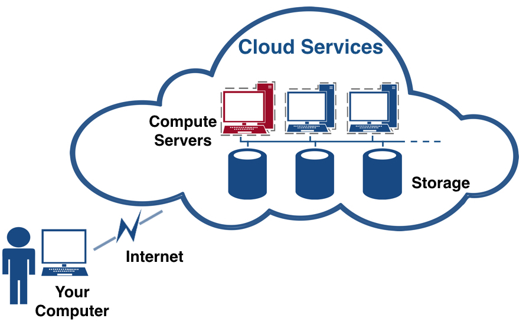
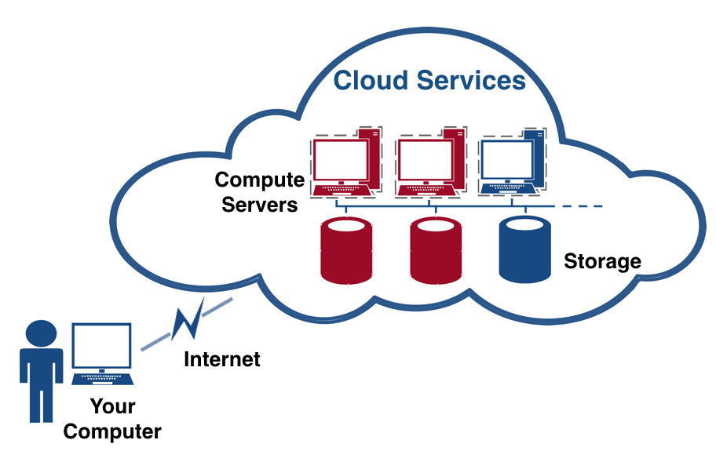
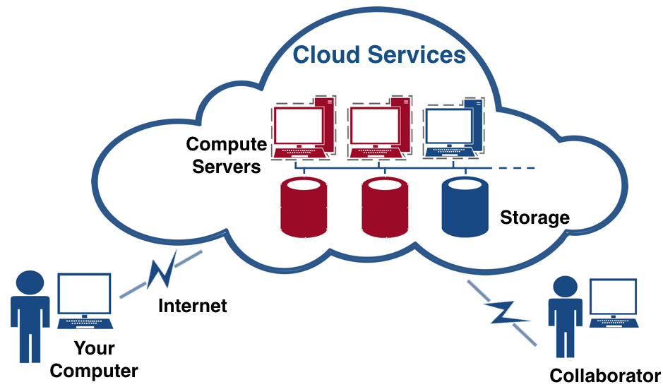

Module 1
Overview of cloud computing and the Nectar services
Sections of this module:
IntroductionCourse overview
What is Cloud Computing?
Cloud services
Virtualization
Common concerns
History
NeCTAR Services
Benefits for your research
Summary
View all sections on one page (Printer friendly)
What is Cloud Computing?
Imagine several servers in some data center are analyzing your large research data set. They are exchanging possibly huge amounts of data while they analyze your data in tandem. At the same time, you have access to large amounts of data storage located at that data center. You don’t need to have this expensive server and storage infrastructure at your research organisation — you just access it over the Internet. The servers and storage are hosted at the data center, or as is commonly said, they are “in the cloud”.
You can take advantage of powerful processing even if the university or research institution does not provide the large-scale compute and storage hardware that you require. You can easily share data with colleagues, simply by giving them access to the storage you maintain “in the cloud”.
Simply put, cloud computing means storing and accessing data and programs over the Internet instead of your office computers hard drive.

The National Institute of Standards and Technology has defined Cloud computing as
“A model for enabling ubiquitous, convenient, on-demand network access to a shared pool of configurable computing resources (e.g., networks, servers, storage, applications and services) that can be rapidly provisioned and released with minimal management effort or service provider interaction.”
It is not clear where the term “cloud” comes from. One popular explanation is that it stems from the way in which charts in network computing are drawn. Often, a set of servers accessible through the Internet are surrounded by a cloud-like shape, in order to illustrate that they are located at some remote place accessible through the Internet. Sometimes, in computer network diagrams the Internet itself is illustrated as a cloud-like shape.

The image above shows how you connect to your cloud computing infrastructure (computers and storage) via the Internet (Used resources are displayed in red — here, only a virtual machine is in use). Your local computer is only used to control your resources from remote and display things on your screen — the data and compute servers are actually “in the cloud”.
So why is this good?
Imagine your research software requires lots of resources to run optimally: Either more computers working in parallel, or a lot of storage. Your research organisation may not be able to provide such resources to you, or if you were to set up several computers in your office, that would incur lots of costs and maintenance. In the cloud, you can easily scale up to the resources you require at the time you need them (see image below), and release the resources when you don’t need them any more. After resources have been released, they don’t incur any more costs or maintenance activities.

Another advantage is that the Cloud enables efficient research collaboration: Collaborators may be granted access to the same services, and you can work together on the same platform without the need for synchronization.

There are more advantages, and also some drawbacks, to migrating your research IT infrastructure to the cloud—but we shall talk about this later on in more depth.
To sum up, cloud computing enables research infrastructure to be
-
more flexible
-
easier to use
-
cheaper
What the cloud is not
-
It does not mean accessing your local hard-drive and computer. This is called local storage and computing, because it is physically close to you. This is how the computer industry worked for decades and the model that you are probably most familiar with.
-
It does not mean having a networked attached storage (also called NAS) which is located in your local facilities, e.g. in your office, lab or at some facility which is administered by your University. This is a bit confusing because some NAS let you access the data remotely via the Internet, e.g. from home. Sometimes the network may be called something with “cloud”, which makes things a bit confusing.
Definition of Cloud Computing
The National Institute of Standards and Technology’s definition of cloud computing identifies “five essential characteristics”:
-
On-demand self-service.
“A consumer can unilaterally provision computing capabilities, such as server time and network storage, as needed automatically without requiring human interaction with each service provider.”
In this course, you will learn how to provision your resources (e.g. Computing and Storage) from the Dashboard using a regular Web-browser.
-
Broad network access.
“Capabilities are available over the network and accessed through standard mechanisms that promote use by heterogeneous “thin” or “thick” client platforms (e.g., mobile phones, tablets, laptops, and workstations).”
You may access your compute and storage services via a variety of devices. In this course, you will use your computer or laptop to follow the exercises.
-
Resource pooling.
“The provider’s computing resources are pooled to serve multiple consumers using a multi-tenant model, with different physical and virtual resources dynamically assigned and reassigned according to consumer demand. There is a sense of location independence in that the customer generally has no control or knowledge over the exact location of the provided resources but may be able to specify location at a higher level of abstraction (e.g., country, state, or datacenter). Examples of resources include storage, processing, memory, and network bandwidth.”
In other words, cloud computing serves a large amount of customers with their compute, storage and software needs. You can choose the data center in which your resources will be located, but you cannot choose a particular computer or hard-drive where your software is running or your data is stored.
-
Rapid elasticity.
“Capabilities can be elastically provisioned and released, in some cases automatically, to scale rapidly outward and inward commensurate with demand. To the consumer, the capabilities available for provisioning often appear to be unlimited and can be appropriated in any quantity at any time.”
One major advantage of cloud computing is scalability, in the context of cloud computing often referred to as elasticity — You can quickly re-provision resources, e.g. at times when your demands are higher before a paper deadline or when you need to run experiments, you can request more resources, and release them again after you are finished.
-
Measured service.
“Cloud systems automatically control and optimize resource use by leveraging a metering capability at some level of abstraction appropriate to the type of service (e.g., storage, processing, bandwidth, and active user accounts). Resource usage can be monitored, controlled, and reported, providing transparency for both the provider and consumer of the utilized service.”
The amount of resources you use can be monitored and metered. In many cloud computing services, you pay for the amount of resources you use. The NeCTAR services are free to you. We will talk about NeCTAR services shortly.
–– Resource: “The NIST Definition of Cloud Computing” (PDF). National Institute of Standards and Technology. Retrieved 21 April 2015.
In summary
Cloud computing is characterised by on-demand deployment of virtual and highly scalable resources. The traditional local computing model requires purchasing a cluster of computers, finding space in your local lab and hiring an administrator. This is a significant expenditure with high maintenance costs. The facility sits idle when not needed, which is a waste of resources. Instead, with cloud computing, you can outsource to remote facilities, and use only what you really need.

 This work is licensed under a
This work is licensed under a